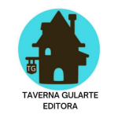

Federação Gaúcha de Robótica e Inovação (FGRI)
O intuito da Federação Gaúcha de Robótica e Inovação (FGRI) é promover o desenvolvimento da robótica e inovação no estado do Rio Grande do Sul, estabelece esta normativa com o objetivo de fomentar a criação de torneios de robótica e padronizar o modelo de startups, consolidando o processo de inovação.
Solicitação de Registro CRI - Conselho de Robótica e Inovação
O registro no Conselho de Robótica e Inovação (CRI) abrange desenvolvedores de software (CPF) e startups (CNPJ). Sua missão é promover a inovação e o desenvolvimento tecnológico na área de robótica, realizando a supervisão de práticas éticas, o fomento de pesquisa e desenvolvimento (P&D) e a criação de oportunidades de negócios e parcerias estratégicas no setor. O CRI visa servir como uma plataforma para conectar desenvolvedores, startups e investidores, incentivando a criação de novas tecnologias e soluções.
Estágio Voluntário (100% HOME-OFFICE)
Nesse estágio, o estudante atuará como desenvolvedor estagiário voluntário, com atuação 100% HOME-OFFICE, contribuindo para projetos da FGRI como desenvolvimento de jogos em Godot e digitalização de processos administrativos. O estágio não será remunerado, mas oferecerá incentivos, como acesso gratuito a cursos profissionalizantes na plataforma TGEDU e emissão gratuita do registro no Conselho de Robótica e Inovação (CRI).
Pesquisa com Núcleo de Inovação Tecnológica (NIT)
A FGRI participa desde 2023 de uma pesquisa de gamificação com o Núcleo de Inovação Tecnológica (NIT) da Faculdade QI Brasil, desenvolvendo uma solução especializada para aplicação empresarial e educacional da gamificação chamada RPG Ação V Reação.
-
Conselho de Robótica e Inovação:
- Presidente do Conselho de Robótica e Inovação: Júlia Gularte
- Vice-Presidente do Conselho de Robótica e Inovação: Wilson Costa
- Diretor Acadêmico: Silvio Viegas
- Consultor de Computação Aplicada: Marcelo Santos
- Consultor de Robótica: Saulo Caetano
- Consultora de Gestão: Laira Seus
- Consultor de Cibersegurança: Marcelo Rocha
- Consultor de Marketing: Antônio Torres
Parcerias:
